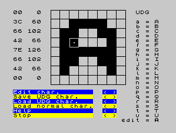
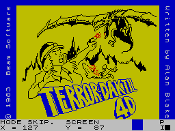
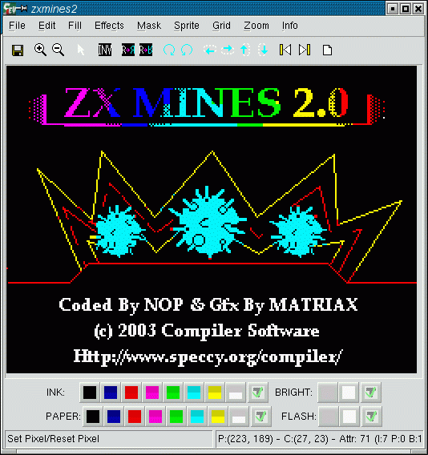
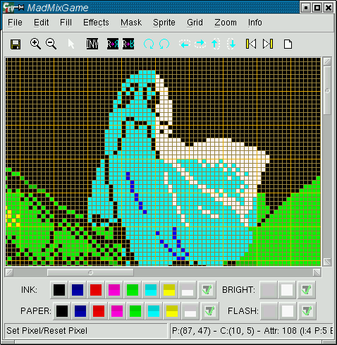
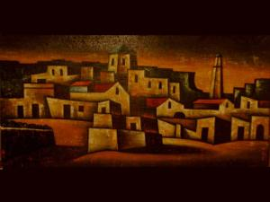
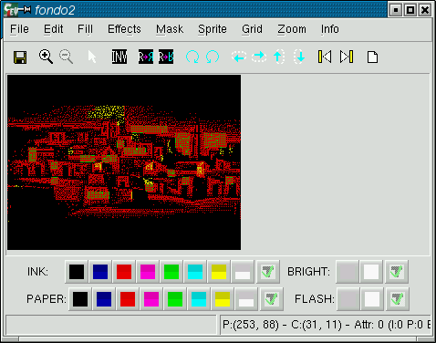
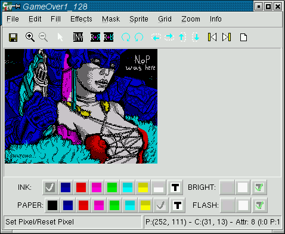

SevenuP: EDITOR GRÁFICO PROFESIONAL PORTABLE
A la hora de crear nuevo software para Spectrum, ya sean juegos, demos o
pantallas de carga, muy probablemente necesitaremos diseñar los gráficos
previamente mediante algún tipo de editor, en lugar de crearlos en tiempo
de ejecución mediante primitivas gráficas. Pantallas de carga, gráficos UDG,
o sprites pueden ser creados a priori e incorporados a nuestros programas
en tiempo de compilación. Pero, ¿con qué tipo de editor gráfico podríamos
hacer algo así?
Seamos programadores o grafistas, al crear algo nuevo para nuestro
Spectrum se nos antoja indispensable alguna herramienta que nos
permita realizar el diseño de los gráficos, pantallas fijas o sprites
para nuestros programas de una forma cómoda y sencilla.
Muchos programas generan gráficos a partir de primitivas
(rectas, rectángulos, píxeles individuales, círculos y rellenados) como
las aventuras conversacionales, las cuales tienen los gráficos
almacenados en microdibujos del estilo de "LINEA DE X A Y", "RELLENADO
EN PUNTO Z CON COLOR C", etc. Este tipo de gráficos sólo es viable en
una pequeña cantidad de juegos; por norma general necesitaremos
usar gráficos prediseñados en programas "de dibujo" que permitan al
diseñador más libertad con el fin de dotar a éstos del mayor realismo
posible.
Hay varias necesidades especiales a
la hora de crear gráficos para un proyecto en Spectrum. Veámoslas por
categorías:
Gráficos UDG
Los Gráficos Definidos por el Usuario (UDG) se utilizan
principalmente en BASIC. Los gráficos UDG están orientados al
caracter, es decir, consisten en modificar el aspecto de un
determinado carácter de texto de 8x8 píxels y dibujarlo como si fuera una letra
en posiciones absolutas múltiplos de 8 píxeles en la pantalla. Para
hacer gráficos más grandes de 8x8 (más de 1x1 caracteres), se diseñan
los UDGs por separado y se dibujan juntos. De este modo, un personaje
de 16x16 píxeles estará formado por 4 UDGs de 8x8 píxeles en formato
2x2 UDGs. Los UDGs se "cargan"
pokeando los valores de los píxeles en unas direcciones determinadas,
como se verá en el curso de BASIC en su momento.
Existen gran cantidad de pequeños programas nativos para Spectrum
que permiten dibujar gráficos UDG (un sólo caracter cada vez) y que
nos dan los valores que hay que pokear en el código BASIC para poder
utilizar ese gráfico UDG. Algunos de los más conocidos son "UDG
de F. Ainley", "UDG Maker" o "UDG Machine". Aparte de los más
extendidos, se llegaron a publicar muchas pequeñas utilidades similares
en diferentes revistas del sector, para ayudar a los lectores a
diseñar los gráficos de los juegos que enviaban a las mismas.
| 
|
| Modificando la letra A para hacer un UDG en 'UDG de F. Ainley' |
Pantallas de carga o de juego
Para hacer nuestro programa o juego necesitaremos habitualmente
dibujar una pantalla de carga o de presentación que ocupe parte o
la totalidad del área de visualización. Existen gran cantidad de
programas que corren de forma nativa en el Spectrum para dibujar
pantallas y grabarlas en bloques de bytes para su posterior carga
desde nuestros juegos. El problema de estos programas es que, en general,
debemos dibujar utilizando el teclado (y no el ratón, que suele ser
más fino a la hora de dibujar) y que estaban algo limitados en cuanto
a efectos. Ejemplos de este tipo de programas son Artist, Melbourne
Draw, o SuperGráficos (versión en español del Melbourne Draw).
En estos editores podremos mover un cursor especial mediante el
teclado, y "levantar" o "bajar" el puntero para que al desplazarnos
podamos dibujar píxeles en el área de dibujo. Opciones más avanzadas
nos permiten dibujar primitivas básicas, cambiar atributos de tinta
y papel o rellenar zonas cerradas.
Las pantallas suelen grabarse como conjuntos de píxeles, o bien
como microdibujos (como hacía el editor gráfico del PAWS).
A continuación podemos ver una captura de Melbourne Draw (de la
revista Crash nº 4), que permitía a su vez grabar y cargar gráficos
UDG (no tan sólo pantallas completas).
| 
|
| Pantalla de carga de un juego en Melbourne Draw |
Aparte de las pantallas que vemos durante la carga de los juegos
desde cinta, este tipo de editores gráficos también se usan para el
diseño de las áreas de juego, sprites y marcadores en algunos juegos.
Diseño de Sprites
En otras ocasiones tenemos que trazar gráficos que no son UDGs (no
son múltiplos de caracteres y no se van a usar en programas BASIC),
y tampoco son pantallas completas. Estos gráficos se deben almacenar
de forma que sean rápidos de imprimir en videomemoria en un programa
o juego, y en ocasiones es necesario dibujar también lo que se llaman
máscaras del gráfico, que son "negativos" en negro sobre blanco del
sprite y que se utilizan para que al dibujarlo, éste deje ver a su
través en aquellas zonas en que el gráfico deba de ser transparente.
El programa también debe facilitarnos el dibujado y almacenamiento
de los diferentes fotogramas de las animaciones de los personajes
del juego.
Para diseñar este tipo de gráficos podemos utilizar editores de los
vistos anteriormente, o bien editores nativos concretos, como Dynamic
Graphics.
SevenuP: un editor gráfico para unirlos a todos...
Las herramientas nativas para Spectrum eran suficientes en su
momento, pero hoy en día resulta más cómodo trabajar sobre un sistema
que permita utilizar un ratón e integrar en un mismo programa todas
las necesidades de quien quiere programar juegos en código máquina,
hacer aplicaciones o juegos en BASIC con UDGs, o diseñar gráficos o
pantallas de carga espectaculares. Esta herramienta tiene un nombre:
SevenuP.
| 
|
| Editando un fichero .scr con zoom x2 |
La primera cuestión es: ¿de dónde viene el nombre SevenuP? Como su
autor (Jaime Tejedor alias metalbrain) nos indica en su FAQ, la idea
de crear SevenuP vino a raíz del editor de gráficos SpecDraw creado
por Santiago Romero y cuyo desarrollo fue abandonado.
Jaime pensó en mejorar SpecDraw, creando desde cero un nuevo programa que mejoraba
en todos los aspectos a este último. A la hora de buscar un nombre para
su editor de Sprites, asoció mentalmente el nombre de "sprite" con el
de la competencia de la popular bebida (es decir, Seven Up), con la S y la P
mayúsculas referenciando a la vez a SPrite y a SPectrum (un origen de nombre
cuanto menos curioso).
Una de las principales ventajas de SevenuP es que está escrito en
C++ usando las librerías wxWindows, lo que lo hace compilable en
diferentes Sistemas Operativos como Linux, Windows o Mac.
| 
|
| Zoom 4x en la pantalla de carga de Mad Mix Game |
SevenuP permite hacer en un sólo programa todo lo que hemos visto en
este artículo: gráficos de pantalla completa, graficos de tamaños
menores, UDGs, animaciones (frame a frame), máscaras, etc., de una
forma cómoda y rápida. El trabajo realizado podremos exportarlo a SCR,
BIN, grabarlo en su formato nativo (.SEV) o extraerlo a código ASM o
C, todos estos formatos pensados para ser utilizados en programas de
Spectrum. SevenuP es un verdadero editor "pixel-based" (orientado a
trabajar con píxeles) y podría ser considerado el "Deluxe Paint II" del Spectrum
(el mítico editor Deluxe Paint II ha sido durante años el mejor
editor pixel-based en arquitecturas Amiga y PC).
También permite grabar la imagen resultante para verla en un ordenador
actual en formatos gráficos estándar como PNG, JPG, BMP, PCX, TIF o XPM.
Una de las novedades que introdujo la versión 1.0 es que permite
importar imágenes, es decir, convertir imágenes en formatos actuales (por
ejemplo, BMP, PNG o JPG) a imágenes en estilo del Spectrum (256x192, y
los colores tinta/atributo del Spectrum). La importación de imágenes
no es tan buena como la del programa BMP2SCR, pero esta función hay que tomarla más
como una ayuda integrada en el editor que como la finalidad del mismo.
Veamos un ejemplo de esta nueva funcionalidad importando una
imagen en SevenuP.
Sea la siguiente imagen en formato JPG de 1024x768 píxeles y 16
millones de colores:
| 
|
| Captura de un cuadro pintado al óleo :) |
Mediante la opción de IMPORT de SevenuP, obtenemos una versión
256x192 píxeles y con los 8 colores del Spectrum. La conversión no es
exacta (pasamos de 16 millones de colores a 8), pero considerando la
velocidad con que lo hace y el resultado, se puede tildar de bastante óptima
(aunque podríamos haber obtenido mejores resultados convirtiendo la
imagen con el programa BMP2SCR):
| 
|
| Resultado de la importación de la imagen anterior |
Si se realizan unos pequeños retoques a la imagen (para mejorar los
colores en ciertas zonas), se añaden más figuras o texto, se dispondrá
finalmente de un fichero .SCR con la pantalla convertida.
Esta imagen podría, por ejemplo, convertirse a TAP con bin2tap, introducirse en un
.DSK o .TZX (o concatenarse a otro TAP) y ser cargada como pantalla
de carga o como pantalla de juego con LOAD "" SCREEN$.
Cabe destacar que la importación no es exacta siempre que haya que
reducir la resolución y número de colores de una imagen, pero lo será
en caso de diseñarla a 256x192 y 8 colores. Es decir, la imagen de
ejemplo anterior es diferente del original sustancialmente, ya que hemos
pasado de 1024x768x256 a 256x192x8 con la conversión. Si la imagen original
fuera de 256x192x8 (siendo esos 8 colores los colores primarios del Spectrum),
la conversión sería perfecta, con lo cual la imagen en el Spectrum sería
exacta a la imagen en GIMP o Photoshop. Esto permite diseñar y dibujar en
otros programas y posteriormente importarlo en SevenuP, sin más que
seguir esta sencilla regla de tamaños y profundidad de color.
Qué se puede hacer con SevenuP 1.x
Básicamente (y a la espera de futuros artículos más orientados a los
gráficos de Spectrum y su inclusión en juegos) con SevenuP podemos:
Cargar y grabar (importar/exportar) los gráficos en formatos actuales.
Cargar y grabar los gráficos en formatos nativos de Spectrum.
Trabajar con zooms desde 1x hasta 48x. Incluye una opción de
AutoZoom para ajustarlo al tamaño del archivo cargado y el de la
pantalla.
Diferentes modos de dibujado directamente con el ratón.
Rejilla de dibujo opcional.
Efectos sobre los sprites como Reflejo vertical u horizontal,
Rotaciones, inversión y movimientos del gráfico en las 4 direcciones.
Gestión de Sprites y sus fotogramas.
Máscaras en los gráficos.
Rellenado con colores planos y con texturas.
Posibilidad de deshacer pasos efectuados anteriormente.
Con todas estas opciones las posibilidades son infinitas, como iremos
descubriendo con su uso. SevenuP es en
estos momentos el mejor editor gráfico existente (no nativo) para Spectrum,
y está llamado a ser el editor definitivo dado a sus
características de portabilidad, ser OpenSource (los fuentes están
disponibles, y se podrían adaptar a futuras plataformas), pero sobre todo
por su elevada calidad.
Si acaso las principales pegas de SevenuP son la falta de primitivas gráficas
de dibujado (líneas, rectángulos, círculos) y la posibilidad de añadir texto
de forma sencilla a las imágenes. Seguramente la idea de Metalbrain en este sentido
es que lo ideal es dibujar una imagen a 256x192 y 8 colores en cualquier
editor gráfico como GIMP o Photoshop, para que su posterior importación en
SevenuP permita los ajustes finales antes de salvarla como SCR. De otro modo,
SevenuP tendría que ir incorporando todo el set de herramientas de dibujo
de otros editores, algo que choca frontalmente con la idea inicial de Metalbrain
de congelar la versión actual de forma que sea la última (a menos que aparezcan
bugs), y dedicarse a la creación de nuevos juegos para Spectrum.
| 
|
| Editando pantallas famosas |
Y por supuesto, todo trabajo realizado por SevenuP se puede
incorporar a cualquier programa en BASIC, C o ASM para Spectrum,
gracias a los filtros de exportación a los diferentes lenguajes, o a
que podemos incluir directamente los ficheros de datos en las cintas o
discos emuladas en nuestros programas mediante utilidades como cpcxfs
o bin2tap.